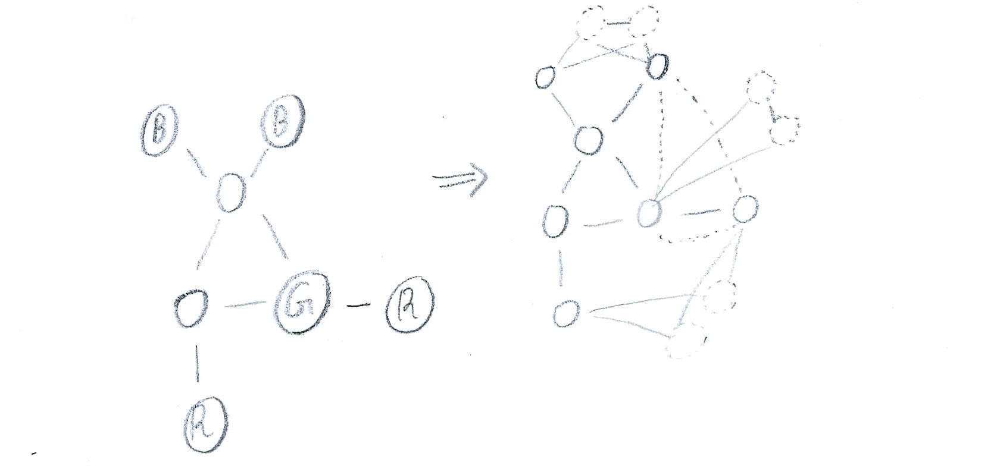

Ex. 1
Here is a very illustrative example.

The procedure of encoding 3COL-UNARY to 3COL is as:
- \(i\) For each group of nodes labeled with some colour x, create two additional connected nodes x1 and x2, and connect each node coloured x to both of them.
- \(ii\) For each two distinct groups of colours x and y, connect some node from x with some node from y.
When encoded input is run on 3COL,
- Procedure (i) ensures all nodes coloured x will have the same colour, even if that colour is not exactly x.
- Procedure (ii) ensures groups of labeled nodes will have different colours.
Notably the colours outputted by 3COL may not match the given original labeled colours. Since colours are symmetric, i.e can be exchanged without tampering any required condition, an encoded graph $f(w)$ is accepted by 3COL if and only if graph $w$ is accepted by 3COL-UNARY.
Ex. 2
The goal is to show any language in NP can be polynomially reduced to IMPLICIT-4COL. The exponentiality of number of vertices of graph $G_C$ is the central key of testing all possible certificates and in turn determining whether a given w belongs to L language.
By cook-levin we know any NP language can be encoded in terms of SAT, and hence we can construct a corresponding circuit. Since the circuit’s input is of length 2n, we can think of it as partitioned into two n-length inputs. The first one is problem’s input (like a graph) and the second is a potential certificate (like a graph-route). The circuit evaluates whether a given input along some literals assignments (cirtificate) yields true (satisfiable).
We assume any language input is prefixed with 0, and any certificate input is prefixed with 1. If the circuit is given an invalid encoding it immediately outputs FALSE. In other words, If a circuit accepts some input pair, we are ensured the first one indicates a language input and the second indicates a possible certificate.
Now we can think of graph $G_C$ as being partitioned into two groups; One for language inputs and the other for all possible certificates. If a vertix prefixed with 0 is connected to a vertix prefixed with 1, we can immediately conclude the language input is satisfiable, and otherwise it is unsatisfiable.
Given any language $L$ we can construct a corresponding $C$, and by IMPLICIT-4COL a corresponding $G_C$. For any input $w$ which we wish to check whether it belongs to $L$, We can see whether its encoded vertex in $G_C$ is connected to any other vertex.
Ex. 3
Notation.
- NAE-Constraint: $N_i = (x_1, x_2, x_3)$
- $XOR(x_i, x_j) = (x_i \vee x_j) \wedge (\neg x_i \vee \neg x_j)$
- $GXOR(x_i, x_j, x_k) = XOR(x_i, x_j) \wedge XOR(x_i, x_k) \wedge XOR(x_j, x_k)$
Recall an $XOR$ means exactly one of two literals is true
Lemma. $GXOR$ is unsatisfiable.
Observe each two $XORs$ intersect a literal $x_i$. So either:
- $x_i$ is False, and $x_j$ and $x_k$ are both True. Or
- $x_i$ is True, and $x_j$ and $x_k$ are both False
But that contradicts the third $XOR$ stipulating exactly one of $x_j$ and $x_k$ is True.
Lemma. 5 clauses of $GXOR$ are satisfiable.
Following the same line of reasoning of the previous lemma, It’s clear
by ignoring some clause of the 6 clauses of $GXOR$, we can have $x_j$
and $x_k$ both assigned to the same boolean value.
Lemma. Equivalence of NAE constraint and 5 clauses of $GXOR$.
It is clear from the previous discussion that satisfying any 5 clauses
of $GXOR$ is equivalent to satisfying an NAE constraint. Clearly,
Not-All-Equal constraint is exactly the same as either two literals
are True and one is False, or two literals are False and one is
True.
Theorem. An NAE-3SAT: $N_1, N_2, \dots, N_r$ is equivalent to
corresponding MAX-2SAT: $GXOR_1, GXOR_2, \dots, GXOR_r$ with at least
$5r$ clauses to be satisfied.
If MAX-2SAT is going to satisfy exactly 5 clauses of each $GXOR_i$,
Then we are guaranteed of satisfying all $N_i$. In fact, This is the
only feasible distribution of satisfied clauses. Otherwise all 6 clauses
of some $GXOR_i$ must be satisfied, contradicting Lemma 2.
On the other hand, It’s clear if a given NAE-3SAT instance is satisfiable, then so is the corresponding MAX-2SAT.
Ex. 4
“not confident of the solution”
a
As mentioned by the instructor we follow the verifier-based definition of NP. Our goal is to show
$$\begin{aligned}By $S$ we mean an algorithm which simulates $M$ on $(x, u)$, untill it accepts on $t$ steps.
The definition trivially concludes our intended goal. Note if
$